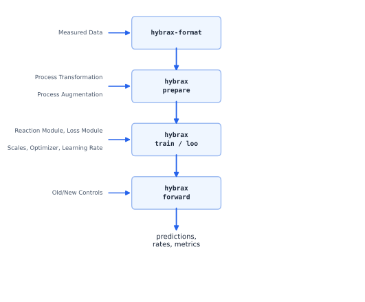
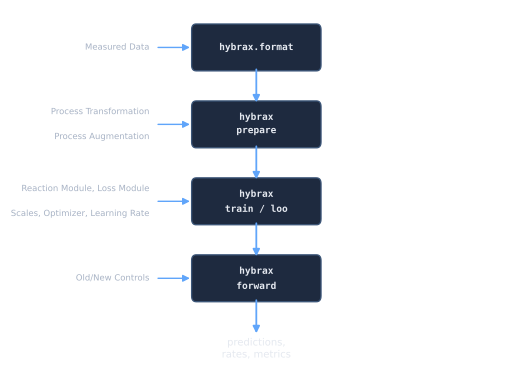

Concepts and Vocabulary¶
Every term these docs use, defined once, in the order you meet them: useful if a page used a word like RMC, controlled, SCL or ADF without explaining it. Worth one read even if you already know the words: a few mean something narrower here than in general usage.
The User Experience¶


The single most useful thing to internalise: hybrax.format owns the transport, you own the biology. Dilution, feed inflow, sample outflow and volume dynamics are already written. What you supply is how fast the cells do things, and how you want to be scored.
The data hierarchy¶
One file on disk is one container.
BioProcessCollection case_id, organism, citation (all optional)
└── processes: {name: BioProcess}
BioProcess ONE experimental run
├── time_axis unit, start, end, and what t=0 means
├── reactor_medium what is in the vessel → components
├── volume everything that moves volume → volume_changes
├── process_variables everything else measured
└── biological_ode the biology, as expressions
Set case_id/organism/citation when the data belongs to one publication or
campaign: case_id is also the natural grouping for cross-validation. Leave them
unset (the default) for raw or intermediate data that is not a full case study yet.
Either way it’s the same BioProcessCollection, holding the same BioProcess
objects.
Two questions that classify everything¶
Almost every field in the data model is an answer to one of these.
1. Is it modeled or controlled? (is_controlled)¶
Meaning |
Consequence |
|
|---|---|---|
controlled ( |
A known input. You recorded it; it is not something the model explains. |
Read from the data at every time |
modeled ( |
A dynamic state. The model has to produce a |
Integrated. Needs an entry in |
A feed pump profile is controlled. Biomass is modeled. Temperature you held at 37 °C is controlled. A pH you are trying to predict would be modeled.
The one that trips people up
A modeled quantity must have a time axis: you cannot integrate a state that has no
dynamics. A StaticVariable process variable with is_controlled=False is rejected with
an explicit error.
2. Is it continuous or discrete? (is_continuous, volume changes only)¶
Meaning |
How the values are stored |
|
|---|---|---|
continuous ( |
A smooth flow: a pump running. |
A cumulative volume trace. hybrax.format differentiates it to get the flow rate. |
discrete ( |
Individual events: boluses, sample draws. |
One signed volume delta per event. |
Volume changes are always stored in the volume unit (L, kg), never as a rate.
Abbreviations¶
These two appear constantly, especially in hybrax.train, and are rarely spelled out.
Short |
Long |
What it is |
|---|---|---|
RMC |
Reactor Medium Component |
A concentration in the vessel: biomass, glucose, product. |
PV |
Process Variable |
Anything measured that is not a concentration in the medium: pH, temperature, DO, off-gas. |
Sign convention is fixed by the type: feeds are non-negative, samples are non-positive. Getting this backwards is the classic import bug, and a validator checks it.
Rates: q_ and r_¶
The biological part of the ODE is written in terms of named rates.
Prefix |
Applies to |
Convention |
|---|---|---|
|
reactor medium components |
A specific rate: per unit biomass. The derivative is |
|
modeled process variables |
A volumetric rate. The derivative is |
If you do not write a biological_ode yourself, hybrax.format generates this one:
rates: q_biomass, q_glucose, q_product, … (one per RMC, biomass first)
derivatives: d(glucose)/dt = q_glucose * biomass
which is why auto-generation requires a component named biomass: there is nothing
to be specific to otherwise. See the Bioprocess ODE.
Volume, feeds and samples¶
Feed medium: the composition of what a feed adds. Every reactor species should have an explicit concentration in it, including the zeros: “absent” and “not recorded” must not be confusable.
Bolus: a discrete addition. Volume jumps at that instant and everything not in the bolus is diluted.
Sample: a well-mixed removal. Volume drops; concentrations are unchanged, because amount and volume fall together.
Event ordering at a shared timestamp: sample first, then bolus. The offline measurement represents the pre-feed reactor state; the bolus then dilutes what is left.
Pseudobatch, ADF and pseudobatch_concentration¶
In a fed-batch run, a measured concentration moves for two reasons: the cells did something, and the volume changed. The pseudobatch transform removes the second one.
ADF: accumulated dilution factor,
V(t) / V(0).pseudobatch_concentration: what the concentration would have been in a batch run with identical biology. Stored per component under that name.
pseudobatch_concentration curves are smoother, so they spline better, and they make
batch and fed-batch runs directly comparable. A good sanity check: this trace should
not jump at a pure sampling event. If it does, the volume accounting is wrong.
hybrax.train vocabulary¶
Term |
Meaning |
|---|---|
prepared artifact |
The output of |
target |
A measured quantity the loss is computed against. |
|
Which measurements become targets: |
reaction module |
The object that predicts rates inside the ODE solve. Neural, mechanistic, or hybrid. Yours to write. |
loss module |
The object that turns a solved trajectory into a dict of named scalar losses. The total is their mean, not their sum. |
run directory |
Everything one training run produced, and it is self-contained: it bundles the config, the |
checkpoint |
A snapshot inside the run directory. Also self-contained. |
|
One optional file where you define hooks. A missing hook falls back to a default. |
hook |
A named function hybrax looks for in your |
trainable / frozen |
Which parameters the optimizer touches, declared with field tags. Untagged array leaves default to frozen. |
fold |
One split in cross-validation: some processes held out, the rest trained on. |
holdout |
Processes excluded from training and scored separately. |
LOO |
Leave-one-process-out cross-validation. |
SCL and RAW¶
The two spaces hybrax.train works in, and the source of most confusion when writing a first reaction module.
RAW: physical units. g/L, litres, hours. What your data is in and what the chemistry needs.
SCL: scaled space, where every axis is roughly O(1). The ODE is integrated here, because a state vector spanning biomass (~1), volume (~1) and cumulative feed (~0.001) makes gradients badly conditioned.
Scaling is a single linear factor per semantic axis. Because it is linear, the same
factor converts a value and its time derivative, so the same helper works for states and
rates. You supply these factors from the estimate_all_scales hook.
If you supply no scales, every scale is 1.0
estimate_all_scales is optional, and omitting it does not raise: it just leaves SCL
identical to RAW, which is exactly the ill-conditioning the design exists to avoid. See
Scaling and Silent failures.
Domain terms¶
Brief, because these are standard, but the docs assume them.
Batch: everything is in the vessel at the start. No feed, no harvest.
Fed-batch: starts like batch, then one or more feeds are added. Volume rises. The most common industrial mode.
Continuous / chemostat: medium in, broth out, volume roughly constant.
Offline data: from a physical sample taken out of the vessel. Sparse; hours or days apart. Every offline row implies a sample draw, and therefore a volume removal.
Online data: from sensors, no sample removed. Dense; seconds to minutes.
Specific rate: normalised per unit biomass (units: amount / biomass / time). A small specific rate times a large biomass can still be a large flux: always look at the product, not just the parameter.
See also¶
Quickstart: see these ideas in motion.
Which page do I need?: routing by task.
The data model: the objects behind the vocabulary.
Design rationale: why these choices.